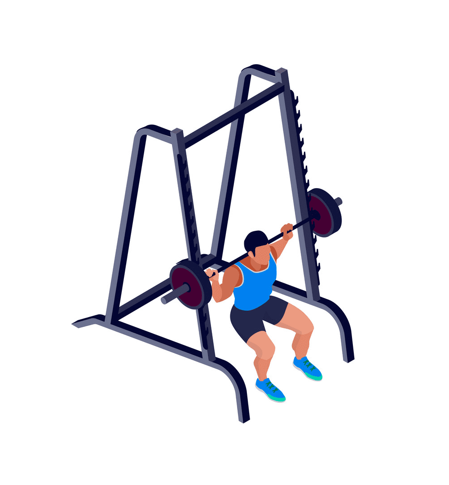

Плавание или водные тренировки: если у вас есть доступ к бассейну,
поплавайте несколько кругов или выполните упражнения в воде.
Водные тренировки отлично развивают выносливость и укрепляют все группы мышц.
Плавание или водные тренировки: если у вас есть доступ к бассейну,
поплавайте несколько кругов или выполните упражнения в воде.
Водные тренировки отлично развивают выносливость и укрепляют все группы мышц.
Без лишних слов! Первая активность.
Прогулка на свежем воздухе: Прогулка в парке или по ближайшему району поможет расслабиться,
улучшить настроение и поддержать общую физическую активность.
Растяжка: Выполнение растяжек поможет снять напряжение с мышц и суставов, улучшить гибкость и предотвратить возможные повреждения. Обратите внимание на растяжку ног, спины, шеи и рук.
Кардиотренировка: Выполнение кардиоупражнений, таких как прыжки на скакалке, бег на месте или высокие колени, поможет улучшить сердечно-сосудистую систему, увеличить выносливость и сжечь лишние калории.
 Силовые упражнения: Используйте собственный вес или небольшие гантели для выполнения упражнений, например, отжиманий, приседаний, выпадов и подтягиваний. Силовые тренировки помогут укрепить мышцы и улучшить общую физическую форму.
Велосипедная прогулка: если у вас есть доступ к велосипеду, сделайте короткую поездку на улице или в парке. Это отличный способ активно провести время и улучшить кардио-функцию.
Плавание или водные тренировки: если у вас есть доступ к бассейну,
поплавайте несколько кругов или выполните упражнения в воде.
Водные тренировки отлично развивают выносливость и укрепляют все группы мышц.